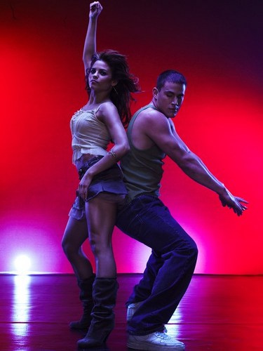
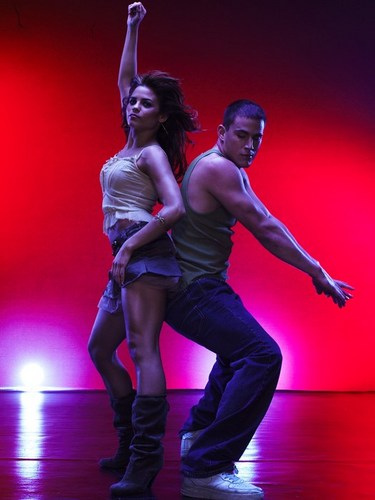
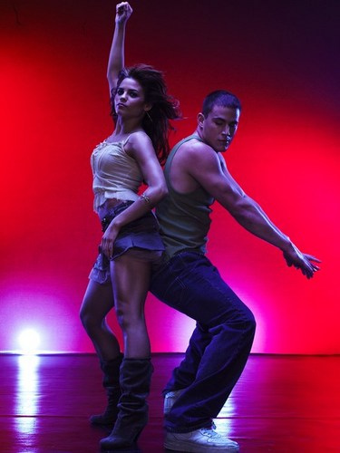
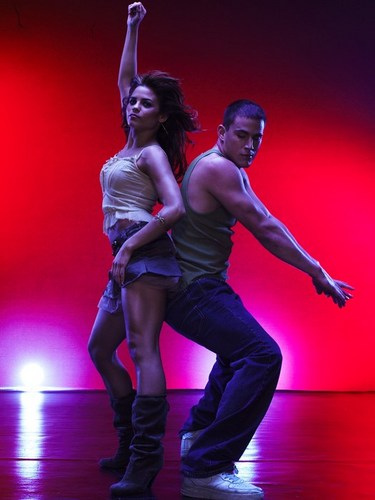

 



«Шаг вперёд 2: Улицы» (англ. «Step Up 2: the Streets») — сиквел молодёжной музыкальной мелодрамы «Шаг вперёд», вышедший в прокат в 2008 году. Премьера 28 февраля 2008 года. Релиз на DVD 15 июля 2008 года.
Энди с детства любила танцевать и мама отвела её на танцплощадку в пригороде, откуда произошёл известный конкурс под названием «Улицы». И Энди училась танцам, не сдаваясь, и, как её учила мама, оставаясь собой. Когда Энди было 16 лет, мама заболела и умерла, и всё изменилось, в том числе и «Улицы».
Энди Уэст — уличная танцовщица, член команды «4-1-0», живущая в Балтиморе, Мэриленд, у своей опекунши Сары — лучшей подруги мамы. Команда Энди участвует в конкурсах команд в клубах и готовится к главному конкурсу — «Улицы», который пройдет неизвестно когда и неизвестно где.
Команда устраивает «выходку» в вагоне метро, танцуя и снимая всё на камеру. После показа видео с места нарушения порядка по телевизору, Сара говорит Энди, что она безответственна, бросила школу и водится с преступниками, запретила ей общаться со своей командой, а также хочет отправить её к тёте Элис в штат Техас.
«Шаг вперёд 3D» (англ. «Step Up 3D») — молодёжная музыкальная мелодрама 2010 года. Премьера 12 августа 2010 года. Третий фильм популярной франшизы «Шаг вперёд», сделанный в технологии 3D. Релиз на DVD 20 октября 2010 года.
J Randall - Spirit of the Radio
Flo Rida feat David Gu... - Club Cant handle Me
Sophia Fresh - This Instant
Get Cool - Shawty Got Moves
Roscoe Dash - My own step